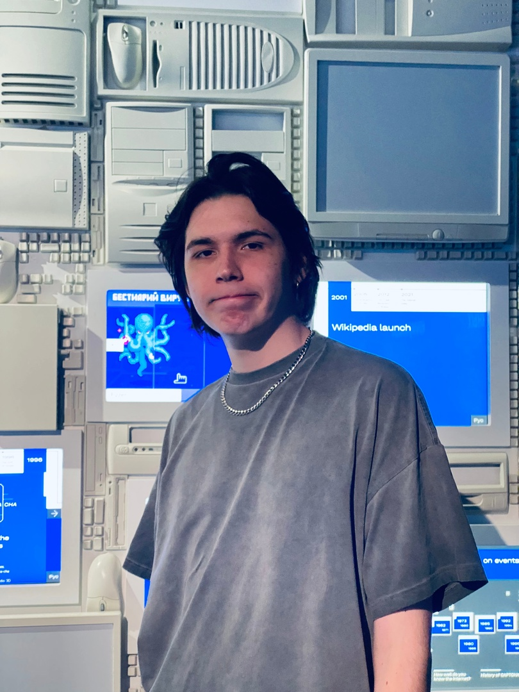

Рассадин Глеб Андреевич
Образование
РТУ МИРЭА / Бакалавр
СЕНТЯБРЬ 2022 – ИЮНЬ 2026, МОСКВА
Образование сфокусировано на приобретение технических знаний и навыков в области информационных технологий, с основным вниманием к программированию, разработке программного обеспечения и компьютерным системам. В процессе обучения успешно освоены основные области знаний, такие как алгоритмы и структуры данных, языки программирования, базы данных, сети и системы управления проектами. Это обеспечивает обширное понимание информационных технологий и их применение в различных областях.
Опыт работы
Пока нет, но когда-нибудь будет
Навыки
Смотрите во вкладе меню
Контакты
Смотрите во вкладе меню
Награды
Пока нет, но когда-нибудь будет